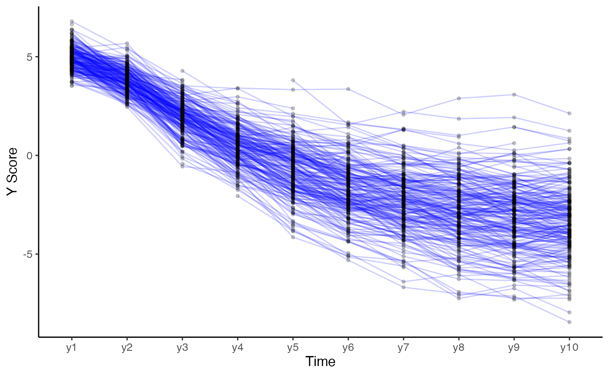

Plot individual trajectories
plot_trajectories( data, id_var, var_list, line_colour = "blue", group_var = NULL, point_colour = "black", line_alpha = 0.2, point_alpha = 0.2, point_size = 1, smooth = FALSE, smooth_method = "loess", smooth_se = FALSE, xlab = "X", ylab = "Y", scale_x_num = FALSE, scale_x_num_start = 1, random_sample_frac = 1, title_n = FALSE, connect_missing = TRUE )
| data | Dataset in wide format. |
|---|---|
| id_var | String, specifying id variable. |
| var_list | Vector, specifying variable names to be plotted in sequential order. |
| line_colour | String, specifying colour of lines. |
| group_var | String, specifying variable name of group, each group will get individual colour lines. This overwrites the line_colour argument. Also consider other options to look at trajectories like facet_wrap which may be more appropriate. |
| point_colour | String, specifying, colour of points. |
| line_alpha | Numeric, specifying alpha of lines. |
| point_alpha | Numeric, specifying alpha of points. |
| point_size | Numeric, size of point |
| smooth | Logical, add moothed conditional means using geom_smooth. |
| smooth_method | String, specifying method to be used for calculating average line, see geom_smooth. |
| smooth_se | Locical, specifying whether to add standard error of average line or not. |
| xlab | String for x axis label. |
| ylab | String for y axis label. |
| scale_x_num | Logical, if |
| scale_x_num_start | Numeric, if |
| random_sample_frac | The fraction of rows to select (from wide dataset), default is set to 1 (100 percent) of the sample. |
| title_n | Logical, speciying whether to print title with number and percentage of cases used for the plot. |
| connect_missing | Logical, speciying whether to connect points by |
ggplot2 object
# Create plot for construct x plot_trajectories(data = data_bi_lcsm, id_var = "id", var_list = c("x1", "x2", "x3", "x4", "x5", "x6", "x7", "x8", "x9", "x10"))#> Warning: Removed 260 rows containing missing values (geom_point).# Create plot for construct y specifying some ather arguments plot_trajectories(data = data_bi_lcsm, id_var = "id", var_list = c("y1", "y2", "y3", "y4", "y5", "y6", "y7", "y8", "y9", "y10"), xlab = "Time", ylab = "Y Score", connect_missing = FALSE, random_sample_frac = 0.5)#> Warning: Removed 58 row(s) containing missing values (geom_path).#> Warning: Removed 270 rows containing missing values (geom_point).